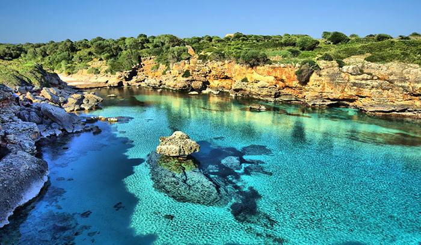

Palma, también conocida como Palma de Mallorca, es un municipio y una ciudad española, capital de la isla de Mallorca y de la comunidad autónoma de las Islas Baleares.Está ubicada en la parte occidental del mar Mediterráneo y, dentro de la isla de Mallorca, está al suroeste. Se encuentra a unos 250 km al este de la península ibérica.
El turismo es la principal actividad económica en Mallorca y, por lo tanto, en Palma. Toda su economía depende, directa o indirectamente de las actividades turísticas en la mayor de las islas baleares. Los inicios del turismo se remontan a principios del siglo XX, con la fundación del Fomento del Turismo de Mallorca y la Cámara Oficial de Comercio, Industria y Navegación de Baleares. El tipo de turismo que la caracteriza es el de sol y playa, debido a la gran cantidad de playas que posee la isla y a las temperaturas de su clima mediterráneo.
La cultura es uno de los principales elementos de la isla. Durante todo el año se suceden festivales, conciertos, certámenes literarios, exposiciones... El centro cultural lo ocupa la capital, Palma de Mallorca, que destaca por su casco histórico y su divertido ocio nocturno.
| El país | Año 2003 |
|---|---|
| Alemania | 3.710.313 |
| Reino Unido | 2.105.981 |